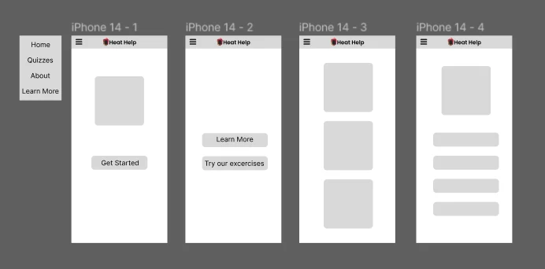
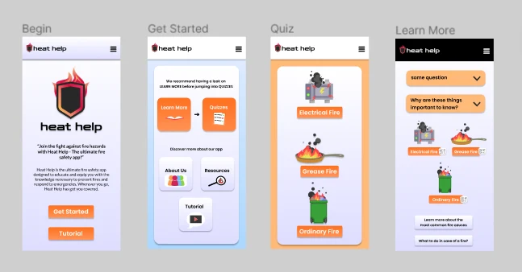
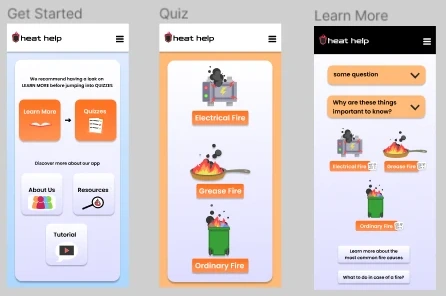
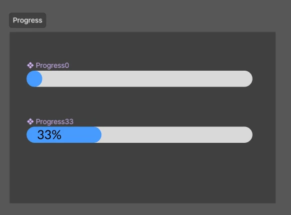
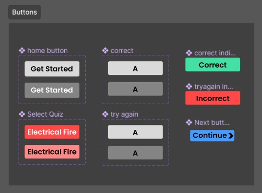
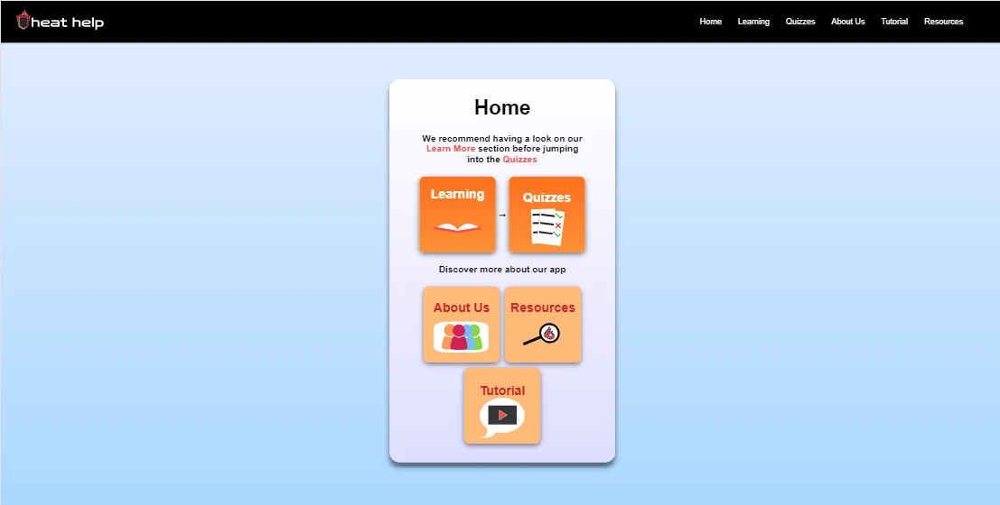
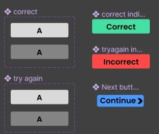

Learning and quiz experience
HeatHelp organizes short learning content and quizzes by topic. My team defined the entry points for learning and testing, the sequence of questions and the progress states. We used low- and high-fidelity designs to refine the flow.
Prototype and feedback
Team usability notes reported that Learn More and Quiz looked similar, that users could lose their way in navigation, and that one participant expected a broader quiz. Those observations point to clearer destinations and quiz scope in the UI.
Shared interaction patterns
The progress indicator and reusable buttons give students a consistent sense of what comes next. The prototype screens show how those components fit into the completed flows.
Figma designs and handoff
My Figma contribution
I worked with the team on early wireframes and high-fidelity flows for learning and quizzes. The mockups show topic selection, navigation, quiz progress and answer feedback. Usability sessions showed that Learn More and Quiz looked too similar, which gave the team a specific issue to address.
Wireframes, components and implementation

The team laid out screens and navigation before refining the visual style.

The flow branches between learning content and topic quizzes.

A detail view shows the quiz entry points and the adjacent expandable topic content.

The component gives learners a consistent signal of where they are in the quiz.

The design library groups quiz selection, correct and incorrect feedback, and the continue action.

The product homepage reflects the navigation and activity choices explored in the mockups.
Quiz component close-ups

Correct, incorrect and continue states use consistent positioning and distinct labels and colours.
| Figma pattern | What the source shows | Handoff decision |
|---|---|---|
| Topic and destination actions | The boards place Learn More and Quiz in the same family of interactions. | Usability feedback called for clearer destination labels and quiz scope. |
| Progress and answer actions | The exported boards show separate progress indicators and button variants. | Carry consistent progress and action states across topic quizzes. |
| Back and home controls | The low- and high-fidelity exports show movement between information, quiz and home. | Check that a user can return from each stage without losing orientation. |